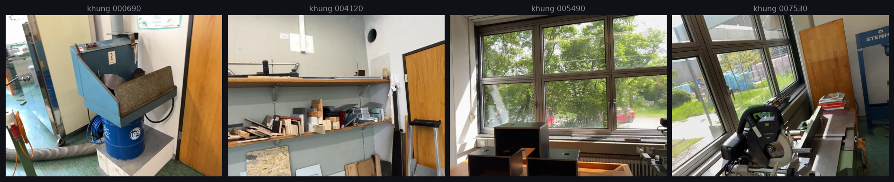
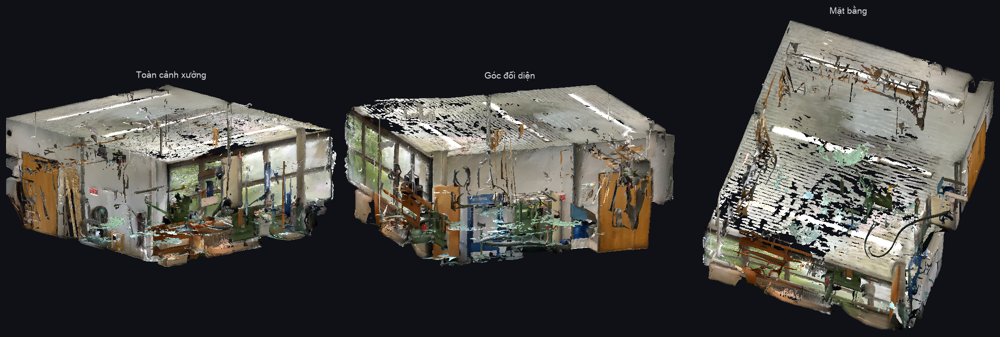
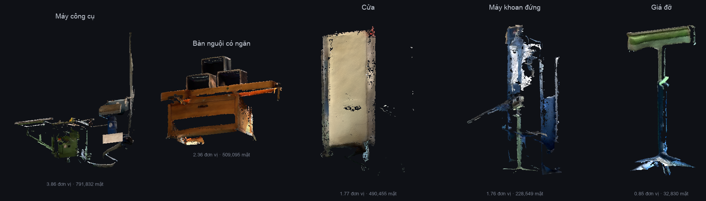
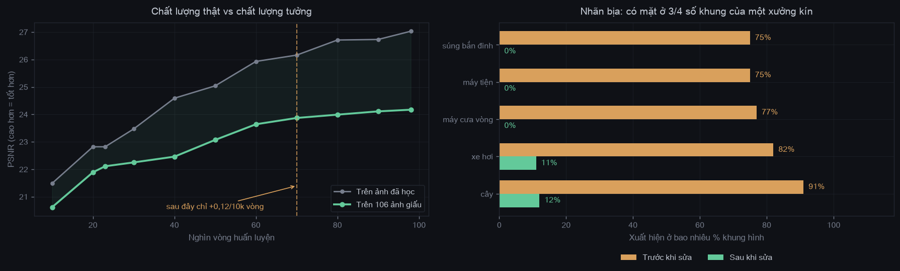

Kết quả nghiên cứu · Video-to-3D
Câu hỏi tôi đặt ra: một đoạn video quay tay chứa được bao nhiêu thông tin 3D, nếu ta khai thác đến cùng? Câu trả lời là bảy lớp dữ liệu — hình học, ngoại quan, ngữ nghĩa, vật thể tách rời — không cần LiDAR, không dựng tay, và tất cả đều kiểm chứng được.
Đây là điểm cốt lõi: đầu vào là thứ ai cũng có, đầu ra là thứ thường phải mua thiết bị hoặc thuê người dựng.
Bốn khung lấy từ 852 khung của video. Không dàn dựng, không đèn, không bảng hiệu chuẩn — đúng chất lượng của một lần cầm điện thoại đi quanh xưởng.

Ba góc nhìn của cùng một mesh, dựng từ chính lần chạy này. Cửa sổ, máy móc, tủ tường và đèn trần đều đọc được — màu lấy từ ảnh gốc, không tô lại.

Phần khó nhất, và cũng là phần tôi nói thẳng về chất lượng: quy trình tách ra 46 khối, trong đó 28 khối có hình dạng đặc — số còn lại là mảnh vỏ bị bóc khỏi tường, dùng được cho va chạm nhưng không phải đồ vật.

Ba cách phổ biến để có một môi trường 3D cho robot. Bảng này để chỉ ra cách của em khác ở đâu — không phải để nói nó tốt hơn ở mọi mặt, vì không phải vậy.
| Tiêu chí | Quét LiDAR | Dựng tay (Blender) | Cách này |
|---|---|---|---|
| Thiết bị | Máy quét chuyên dụng | Không cần | Điện thoại |
| Công một cảnh | Nửa ngày quét + xử lý | Vài ngày tới một tuần | Đi bộ 5 phút + 4 giờ máy chạy |
| Độ chính xác hình học | Sai số mm, có đơn vị mét | Do người dựng quyết định | Tỉ lệ tương đối đúng, chưa hiệu chuẩn mét |
| Ngoại quan | Thường phải chụp ảnh riêng | Phải vẽ vật liệu bằng tay | Màu lấy thẳng từ video |
| Ngữ nghĩa | Phải gán nhãn thủ công | Có sẵn theo cách dựng | Tự động, mô hình ngôn ngữ gán |
| Vật thể tách rời | Một khối liền, phải cắt tay | Tách sẵn theo thiết kế | 28/46 khối dùng được |
| Mở rộng số cảnh | Giới hạn bởi thiết bị | Giới hạn bởi người | Giới hạn bởi số chỗ quay được |
LiDAR chính xác hơn về hình học, dựng tay sạch hơn về vật thể — em không tranh hai điểm đó. Nhưng cả hai đều không mở rộng được theo số lượng: một cái giới hạn bởi thiết bị, một cái giới hạn bởi giờ công.
Cách này đánh đổi độ chính xác tuyệt đối để lấy chi phí biên gần bằng không. Với bài toán huấn luyện robot — nơi cần nhiều môi trường đa dạng hơn là vài môi trường hoàn hảo — em cho rằng đó là đánh đổi đúng hướng.
Nút thắt của sim-to-real không nằm ở thuật toán mà ở số lượng môi trường huấn luyện. Mà môi trường thì đắt — cả tiền thiết bị lẫn công dựng.
Nếu quy trình này đứng vững, thêm một cảnh chỉ tốn một lần đi bộ cầm điện thoại. So với một buổi chụp LiDAR hay một tuần dựng mô hình, đó là khác biệt về bậc độ lớn — và nó đổi câu hỏi từ "ngân sách cho được mấy cảnh" sang "quay được mấy chỗ".
Quét ra một lớp vỏ liền thì dễ, nhưng robot không cầm nắm được gì trong đó — chỉ đi lại được. Ở đây 46 vật là mesh độc lập, có hộp bao, nhãn và lưới va chạm riêng. Đó là ranh giới giữa bài toán navigation và bài toán manipulation.
Tám giai đoạn, một lệnh, không can thiệp tay — kể cả mô hình thị giác-ngôn ngữ cũng chạy nội bộ thay vì gọi API đám mây. Tôi giữ ràng buộc này vì một quy trình phụ thuộc dịch vụ bên ngoài thì không kiểm chứng lại được sau sáu tháng.
Bốn giai đoạn chính. Mỗi đoạn phim là dữ liệu thật của lần chạy này.
Mã nguồn gốc chạy được, nhưng cho kết quả sai ở những chỗ không phép đo nào bắt được. Bảng này là phần đóng góp, đo trên cùng một cảnh.
| Hạng mục | Trước | Sau | Ý nghĩa |
|---|---|---|---|
| Chỉ số chất lượng | 25,08 trên ảnh đã học |
24,17 trên 106 ảnh giấu |
Con số cũ không đo khả năng tổng quát hoá. Con số mới thấp hơn nhưng có thật. |
| Vật thể được giữ lại | 52 | 95 | 43 vật vốn bị loại âm thầm vì một dịch vụ kiểm chứng không tồn tại. |
| Mesh | 15,1 M tam giác 1 khối liền |
20,6 M tam giác 200 khối rời |
Tham số mặc định xoá mọi vật không dính sàn và bỏ 9,5% dữ liệu độ sâu. |
| Khung hình gán nhãn | 100 | 919 | Phủ toàn bộ video thay vì lấy mẫu thưa. |
| Nhãn bịa đặt | "cây" ở 91% khung | 12%, và có thật | Sau khi sửa, kiểm chứng lại: cây nhìn thấy qua cửa sổ. |
| Kiểm định tự động | chưa có | 5/5 đạt | Chạy sau mỗi lần dựng, và nó từng báo trượt — đúng. |
Loại lỗi khó nhất không phải lỗi làm chương trình dừng — mà loại vẫn chạy trơn tru và trả về con số trông hợp lý. Cả bốn mục dưới đây đều thuộc loại đó, và mỗi mục chỉ lộ ra khi tôi dựng thêm một phép đo mà quy trình gốc không có.

Điều làm tôi nghi ngờ: cấu hình lưu cùng mô hình ghi eval=False, nghĩa là tập kiểm thử đã bị trộn vào tập huấn luyện. Con số 25,08 khi đó chỉ nói mô hình thuộc bài đến đâu, không nói nó tổng quát hoá được gì.
Tôi huấn luyện lại, giữ riêng 106 ảnh mà mô hình không hề thấy trong suốt 4 giờ 17 phút. Điểm thật: 24,17 — thấp hơn, nhưng là con số dùng được.
Thu hoạch ngoài dự tính: có tập giữ riêng thì mới đọc được đường cong hội tụ. Sau 70.000 vòng, chất lượng chỉ nhích +0,12 mỗi 10.000 vòng. Cắt ở mốc đó tiết kiệm 1 giờ 20 phút GPU mỗi lần chạy mà mất chưa tới 0,3 điểm — thông tin mà lần chạy cũ về nguyên tắc không thể cho biết.
Đọc mã bước dựng hộp 3D, tôi thấy nó phân ba ngưỡng: nhận thẳng nếu độ tin cậy ≥ 0,9, loại nếu < 0,75, và hỏi lại một mô hình thị giác-ngôn ngữ cho khoảng giữa. Nhưng lệnh gọi đó trỏ tới một máy chủ không tồn tại trên máy chạy. Yêu cầu thất bại, hàm trả về "không đạt", và mọi vật trong khoảng giữa biến mất — không lỗi, không cảnh báo, không dòng log.
Đo phân bố điểm tin cậy mới thấy quy mô: khoảng 0,75–0,90 chứa 530 trên tổng 1.507 mặt nạ. Tôi dựng một dịch vụ tương thích chạy nội bộ bằng chính mô hình đã tải sẵn trên máy. 43 vật thể được khôi phục sau khi gom cụm 3D.
Khi xử lý cả 852 khung hình, danh sách nhãn tích luỹ dần và mô hình bắt đầu coi nó là danh sách phải tìm cho đủ: cây xuất hiện ở 91% khung hình, máy cưa vòng ở 77% — trong một xưởng kín không có.
Cách tôi phân biệt bịa với thật: một vật có thật không thể xuất hiện ở ba phần tư số khung của một lượt đi bộ. Vẽ biểu đồ "nhãn xuất hiện lần đầu ở khung nào, sau đó bám dai bao lâu" thì chữ ký hiện rõ — cây vào từ khung 426 rồi bám 91% mọi khung sau đó.
Tôi giới hạn cửa sổ nhãn gợi ý và viết lại lời nhắc. Sau khi sửa, cây còn 12%. Nhưng thay vì mừng, tôi hỏi lại mô hình về đúng hai khung đó — nó trả lời "ảnh chụp trong nhà; qua cửa sổ thấy cây, xe đỗ và trời mây". Lần này đúng là có thật, và tôi giữ nguyên.
Bước dựng mesh nhận tham số suy từ chính cảnh — nhưng chỉ trên giấy: mã điều phối truyền tham số cho bước huấn luyện và quên bước mesh, nên nó lặng lẽ dùng hằng số mặc định. Đó là hằng số hiệu chỉnh cho phòng ngủ ScanNet++, và cảnh này là một xưởng cơ khí.
Hai hệ quả đo được: giới hạn độ sâu 4,0 xoá 9,5% dữ liệu đáng tin của cảnh này, và tham số giữ-một-thành-phần xoá mọi vật đứng rời không dính sàn — đúng những vật mà bài toán thao tác cần. Tôi cũng phát hiện quy trình thiếu hẳn bước dựng hộp 3D và bước tách vỏ phòng: bước sau đó đòi dữ liệu mà không bước nào sinh ra.
Sau khi nối đủ: mesh từ 15,1 lên 20,6 triệu tam giác, 199 vật thể độc lập được giữ thay vì gộp thành một khối duy nhất.
Năm phép thử chạy sau mỗi lần dựng, không phải kiểm tra thủ công. Điểm quan trọng: trước khi sửa, bộ này báo trượt — và nó trượt đúng chỗ.
| Phép thử | Kiểm tra | Kết quả |
|---|---|---|
| Cấu trúc dữ liệu | Đủ trường, đúng định dạng | Đạt |
| Không có số liệu đặt sẵn | Mọi kích thước đều đo từ dữ liệu | Đạt |
| Chiều cao trần hợp lý | 3,00 | Đạt |
| Vật không lớn hơn phòng | 209 đơn vị³ | Đạt |
| Vật nằm trong phòng | 0/89 lọt ra ngoài | Đạt |
Mở trong trình duyệt: kéo chuột để nhấc và di chuyển vật thể, thanh trượt chỉnh trọng lực, khối lượng, độ nảy. Không cần cài gì.
Mở mô hình tương tác → Xem 3 vật hoàn thiện →Hai trang này dựng trên bản đã kiểm bằng tay: 8 vật rời trong scene vật lý, và 3 vật đã hoàn thiện mặt khuất bằng Hunyuan3D rồi ghép ngược về đúng vị trí trong phòng. Con số 46/28 ở trên là sản lượng của bước tách tự động — nhiều hơn, nhưng chưa qua kiểm tay như 11 vật này.
Nêu rõ để không ai dùng sai. Cả hai đều có đường xử lý đã xác định.
Kích thước rơi rất gần mét (phòng 8,7 × 7,9 × 3,0; ống 3,07; bàn 0,60) và tỉ lệ tương đối giữa các vật là chính xác — nhưng chưa có phép đo thật nào xác nhận. Tôi thử suy hệ số quy đổi từ kích thước chuẩn của cửa, thang, xô: các ước lượng không hội tụ, nên tôi không dán một con số vào cho có.
Đủ dùng cho mô phỏng tương đối và bài toán thao tác; chưa dùng làm số đo kỹ thuật. Hướng xử lý: một kích thước thật đã biết trong cảnh là khoá được tỉ lệ toàn bộ.
Camera không nhìn được mặt sau máy móc, nên mesh có 334 vùng khuyết rộng hơn 30 cm. Tôi kiểm lại trên mesh gốc trước khi cắt bất cứ thứ gì: chúng có sẵn từ bản quét, không phải do xử lý sinh ra.
Tôi đã thử lấp bằng cách nối viền vào tâm và bỏ hướng đó: với lỗ rộng vài mét nó tạo ra những tấm phẳng cắt ngang phòng — trông liền lạc nhưng là hình học bịa. Thà để lộ chỗ thiếu còn hơn giao một bề mặt sai mà người dùng không biết.
Hướng xử lý: mô hình sinh hình học cho mặt khuất (giai đoạn kế tiếp đã lên kế hoạch).
| Giai đoạn | Phương pháp | Ra |
|---|---|---|
| Độ sâu | Depth-Anything-3, suy độ sâu đơn ảnh | 852 bản đồ |
| Ngoại quan | Planar 3D Gaussian Splatting, 98k vòng | 5,99 M điểm |
| Hình học | TSDF fusion, tham số suy từ cảnh | 20,6 M tam giác |
| Ngữ nghĩa | Qwen3-VL-8B chạy nội bộ | 90 lớp |
| Phân vùng | SAM3 theo lời nhắc văn bản | 852 khung |
| Hộp 3D | Nâng mặt nạ 2D lên 3D, VLM kiểm chứng | 95 vật |
| Tách vật | RANSAC tìm mặt phẳng vỏ phòng | 46 mesh rời |
Chạy trên một GPU, không kết nối mạng, 4 giờ 17 phút cho toàn bộ. Trọng số và dữ liệu đầy đủ (3,93 GB) đã lưu trữ, tái sử dụng được.
Xếp theo thứ tự tôi cho là đáng làm trước, kèm lý do.
| Việc | Vì sao | Ước tính |
|---|---|---|
| Khoá tỉ lệ mét | Chặn đường tới mô phỏng vật lý thật. Cần một mốc đo trong cảnh, hoặc suy từ chiều cao camera. | 1–2 ngày |
| Sinh mặt khuất | Lấp 334 vùng thiếu bằng mô hình sinh hình học thay vì nội suy — mở đường cho nhấc vật ra khỏi cảnh. | 1 tuần |
| Chạy trên cảnh thứ hai | Phép thử thật của tính khái quát. Mọi tham số đã suy từ cảnh nên về nguyên tắc chạy được, nhưng chưa kiểm chứng. | 1 ngày |
| Xuất MJCF cho MuJoCo | Biến scene thành môi trường robot chạy được. Phụ thuộc mục tỉ lệ ở trên. | 2–3 ngày |